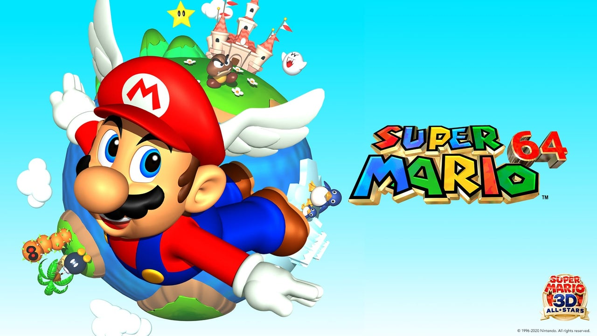
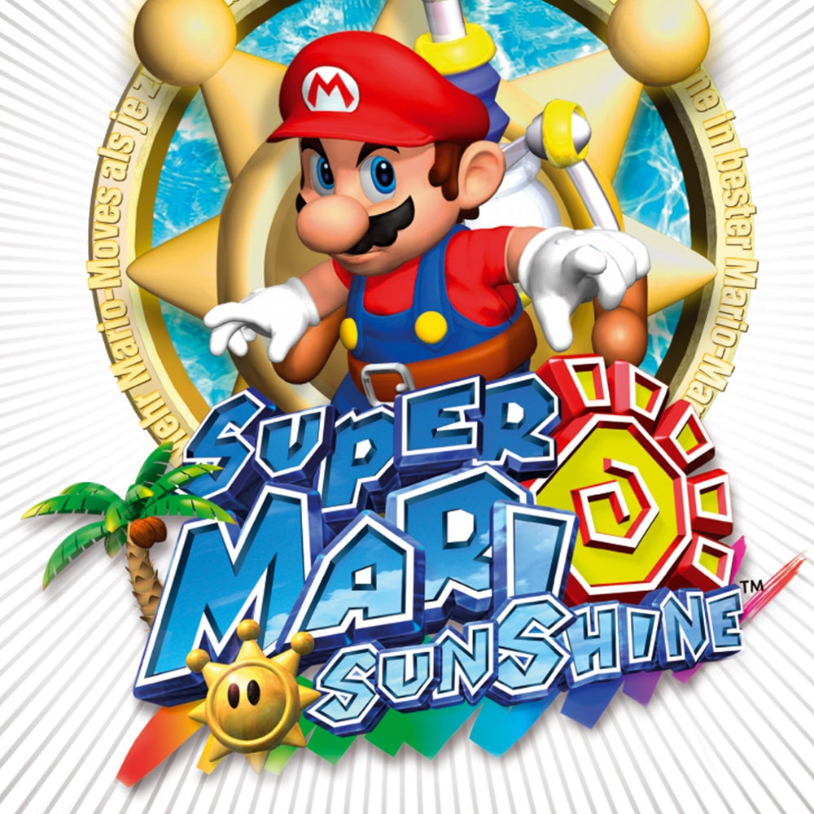

Super Mario adalah sebuah serial permainan video platform yang dibuat oleh Nintendo yang menampilkan maskot mereka, Mario. Disebut juga serial Super Mario Bros. atau singkatnya serial Mario, serial tersebut adalah serial utama dalam waralaba Mario yang lebih besar. Setidaknya satu permainan Super Mario dirilis untuk setiap konsol permainan video dan konsol2D gulir samping pertama yang menampilkan Mario, dirilis untuk Nintendo Entertainment System (NES) pada tahun 1985. Game ini diperoleh melalui kolaborasi oleh Shigeru Miyamoto dari Nintendo dan Takashi Tezuka sebagai penerus game arcade tahun 1983. Mario Bros., yang dibintangi dua karakter: Mario, karakter tituler yang pertama kali muncul di Donkey Kong sebagai karakter pemain asli dan sekuelnya di mana ia menjadi bos terakhir, dan Luigi, yang pertama kali muncul di Mario Bros. Super Mario Bros membentuk banyak elemen inti Mario, seperti Goombas, Koopa Troopas, Bowser, Peach, dan tiga power-upnya: Super Mushroom, meningkatkan ukuran karakter dan memberikan hit point tambahan, Fire Flower, yang memungkinkan karakter untuk melempar bola api sebagai senjata, dan Super Star, memberikan tak terkalahkan sementara. Kata "Super" pada judulnya berasal dari integrasi Jamur Super ke dalam game. Saudara Mario dan Luigi harus menyelamatkan Putri Toadstool/Peach dari Bowser/King Koopa di Kerajaan Jamur. Permainan ini terdiri dari delapan dunia yang masing-masing terdiri dari empat level, dengan total total 32 level. Meskipun tema dunia berbeda-beda, tingkat keempat selalu berupa benteng atau kastil yang berakhir dengan pertarungan melawan Bowser (atau salah satu anteknya yang menyamar sebagai dia). Super Mario Bros. adalah salah satu video game terlaris sepanjang masa.
Gim Super Mario berlatar pada Kerajaan Jamur fiksi, yang biasanya menggunakan Mario sebagai karakter pemain. Gim biasanya dimainkan dengan saudaranya, Luigi, dan sering kali bersama anggota pemain dari Mario. Permainan ini melibatkan karakter untuk berlari dan melompat juga mengalahkan musuh di beberapa level. Gim ini memiliki plot sederhana, Mario dan Luigi harus menyelamatkan Putri Peach yang diculik oleh pemeran antagonis, Bowser. Gim pertama di seri ini, Super Mario Bros., rilis untuk Nintendo Entertainment System (NES) pada tahun 1985, menetapkan konsep dan elemen gameplay inti dalam seri. Termasuk pada banyaknya kekuatan tambahan dan item yang bisa memberikan kekuatan spesial seperti melempar bola api dan mengubah ukuran.
Super Mario Bros., game platform 2D gulir samping pertama yang menampilkan Mario, dirilis untuk Nintendo Entertainment System (NES) pada tahun 1985. Game ini diperoleh melalui kolaborasi oleh Shigeru Miyamoto dari Nintendo dan Takashi Tezuka sebagai penerus game arcade tahun 1983. Mario Bros., yang dibintangi dua karakter: Mario, karakter tituler yang pertama kali muncul di Donkey Kong sebagai karakter pemain asli dan sekuelnya di mana ia menjadi bos terakhir, dan Luigi, yang pertama kali muncul di Mario Bros.[24] Super Mario Bros membentuk banyak elemen inti Mario, seperti Goombas, Koopa Troopas, Bowser, Peach, dan tiga power-upnya: Super Mushroom, meningkatkan ukuran karakter dan memberikan hit point tambahan, Fire Flower, yang memungkinkan karakter untuk melempar bola api sebagai senjata, dan Super Star, memberikan tak terkalahkan sementara. Kata "Super" pada judulnya berasal dari integrasi Jamur Super ke dalam game. Saudara Mario dan Luigi harus menyelamatkan Putri Toadstool/Peach dari Bowser/King Koopa di Kerajaan Jamur. Permainan ini terdiri dari delapan dunia yang masing-masing terdiri dari empat level, dengan total total 32 level. Meskipun tema dunia berbeda-beda, tingkat keempat selalu berupa benteng atau kastil yang berakhir dengan pertarungan melawan Bowser (atau salah satu anteknya yang menyamar sebagai dia). Super Mario Bros. adalah salah satu video game terlaris sepanjang masa.[27]
Super Mario Bros: The Lost Levels (dikenal sebagai Super Mario Bros. 2 di Jepang) adalah sekuel pertama dari Super Mario Bros asli. Ia menggunakan mesin Super Mario Bros., dengan tambahan seperti cuaca, pergerakan karakter, dan lebih kompleks tingkat, semuanya menghasilkan kesulitan yang jauh lebih tinggi. Permainan ini mengikuti gaya perkembangan level yang sama seperti Super Mario Bros., dengan delapan dunia awal yang masing-masing terdiri dari empat level. Saat itu, sekuel ini belum dirilis di luar Jepang karena Nintendo Amerika tidak ingin seri Super Mario diketahui pemain di luar Jepang karena kesulitannya yang membuat frustrasi. Itu tetap tidak dapat diakses oleh pasar pemain video game Amerika yang terus berkembang, dan gayanya sudah ketinggalan zaman pada saat Super Mario Bros. 2 Jepang pada akhirnya dapat dikirimkan ke Amerika. Game ini kemudian memulai debutnya di luar Jepang pada tahun 1993 sebagai Super Mario Bros.: The Lost Levels dalam game kompilasi Super Mario All-Stars untuk Super Nintendo Entertainment System (SNES).
Dalam Super Mario Bros. 2 (dikenal sebagai Super Mario USA di Jepang), Mario dan teman-temannya berusaha mengalahkan katak jahat Wart di alam mimpi Subcon. Berdasarkan prototipe yang dibuang, permainan ini awalnya dirilis sebagai Yume Kōjō: Doki Doki Panic di Jepang, dan akhirnya diubah menjadi permainan Mario untuk seluruh dunia sebagai Super Mario Bros. 2, sebelum dirilis pada tahun Jepang sebagai Super Mario USA sebagai bagian dari Super Mario All-Stars. Salah satu aspek permainan yang paling menentukan adalah empat karakter pemain: tidak hanya Mario, tetapi Luigi, Princess Peach, dan Toad tersedia untuk gameplay pemain tunggal, masing-masing dengan gerakan karakter yang ditentukan: Luigi melompat lebih tinggi, sang Putri dapat melayang di udara untuk waktu singkat, dan Toad adalah yang tercepat. Karakter di sini juga bisa mengambil item dari tanah untuk dilemparkan ke musuh. Ini juga merupakan game Super Mario pertama yang menggunakan pengukur kehidupan, yang memungkinkan karakternya dipukul hingga empat kali sebelum mati.
Super Mario Bros. 3 dibagi menjadi delapan dunia bertema, masing-masing dengan 6 sampai 10 level dan beberapa tahapan bonus ditampilkan sebagai lokasi di dunia luar yang dipetakan. Lokasi-lokasi ini tidak harus dalam urutan linier, dan pemain terkadang diizinkan untuk melewati level atau memainkan permainan secara tidak berurutan. Level yang telah diselesaikan tidak dapat diputar ulang. Tahap bos kedua dari belakang di setiap dunia adalah level gulir samping di atas sebuah pesawat ("Kapal Doom") dengan pertarungan melawan salah satu dari tujuh Koopaling Bowser. Permainan ini memperkenalkan beragam power-up baru, termasuk penerbangan seperti Raccoon Mario dan Raccoon Luigi atau P-Wing sepanjang level yang memungkinkan penerbangan melalui seluruh level. Bowser kembali menjadi bos terakhir.
1.Super Mario Odyssey

2.Super Mario 3D World
.jpeg)
3.Super Mario 64
4.Super Mario Sunshine
5.Super Mario Galaxy
.jpeg)